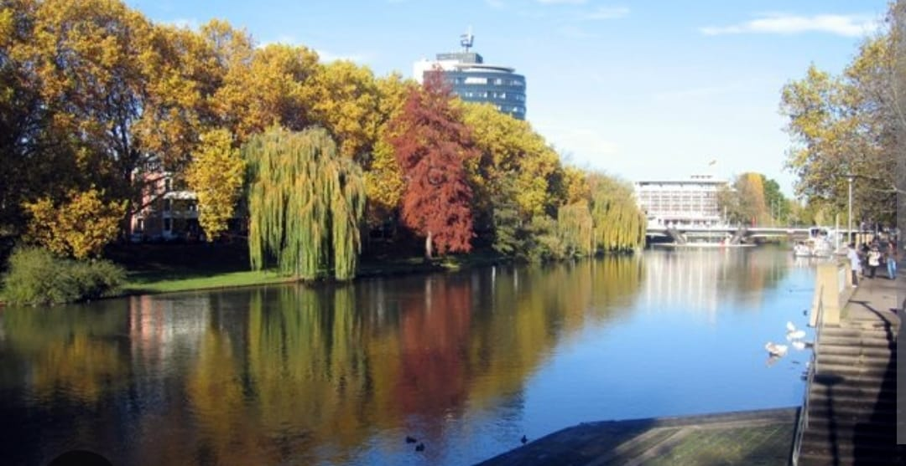
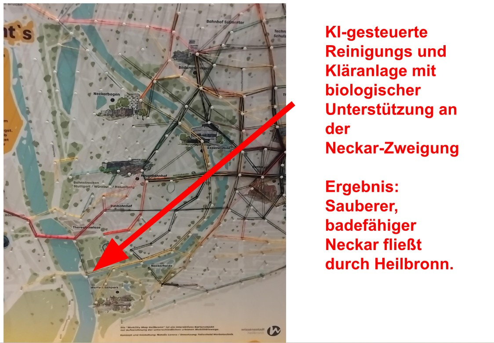

Heilbronn badet im Neckar.
Eine Vision für eine ganze Stadt: ein Fluss, so sauber, dass Kinder wieder hineinspringen, Familien am Ufer verweilen und die Welt nach Heilbronn schaut.
Das Projekt in einem Satz: Eine KI-gesteuerte Reinigungs- und Kläranlage mit biologischer Unterstützung an der Neckar-Zweigung macht den Neckar in Heilbronn wieder sauber und badefähig.
Worum geht es? Vom belasteten zum badefähigen Neckar.
Heute
Der Neckar fließt mitten durch Heilbronn, doch Schwimmen ist aktuell nicht empfehlenswert.
Mit KI
Sensoren, KI und biologische Reinigung halten das Wasser im Blick und sauber.
Morgen
Ein sauberer, badefähiger Neckar: Lebensfreude für Heilbronn und Anziehungspunkt für die Welt.
Stell dir vor, es ist ein Sommerabend in Heilbronn.
Die Sonne steht tief über dem Neckar. Am Ufer sitzen Familien, Studierende und Nachbarn nebeneinander. Kinder lachen im Wasser, Paddler ziehen ihre Bahn, und auf dem Smartphone leuchtet die Badewasser-Ampel: grün.
Der Neckar hat Heilbronn über Jahrhunderte Handel, Arbeit und Wohlstand gebracht. Jetzt kann er den Menschen etwas zurückgeben: Lebensfreude, Gemeinschaft und Stolz auf die eigene Stadt.
Ein Fluss verbindet. Ein sauberer Fluss begeistert.

Vom Fluss durch die Stadt zum Fluss der Stadt.
Ein Fluss zum Anschauen
Wie viele Flüsse in Europa trägt der Neckar Belastungen aus Abwasser, Regenüberläufen und Mikroplastik. Für viele bleibt er ein Anblick, kein Erlebnis.
Wasserqualität in Echtzeit
Moderne Sensorik und Künstliche Intelligenz machen die Wasserqualität erstmals laufend sichtbar, vorhersagbar und steuerbar.
Ein Neckar zum Baden
Ein sauberer, badefähiger Neckar mitten in Heilbronn: verantwortungsvoll gesichert, für alle zugänglich und ein Gewinn für die ganze Stadt.
Künstliche Intelligenz hält den Neckar sauber.
Eine KI-gesteuerte Reinigungs- und Kläranlage mit biologischer Unterstützung, direkt an der Neckar-Zweigung.

Ideenskizze auf der Mobility Map der Wissensstadt Heilbronn.
Messen
Sensoren erfassen laufend Temperatur, pH-Wert, Trübung, Sauerstoff und weitere Indikatoren der Wasserqualität.
Verstehen
KI erkennt Muster, sagt Belastungsspitzen, etwa nach Starkregen, voraus und warnt frühzeitig.
Steuern
Reinigungsprozesse laufen intelligent gesteuert, ressourcenschonend und im Zusammenspiel mit natürlicher, biologischer Reinigung.
Informieren
Eine offene Badewasser-Ampel zeigt jederzeit, ob der Neckar freigegeben ist: für alle, in Echtzeit.
Gebadet wird erst bei verlässlicher Qualitätssicherung nach den Maßstäben der EU-Badegewässerrichtlinie.
Eine Bereicherung für alle Heilbronnerinnen und Heilbronner.
Die Bevölkerung erlebt Künstliche Intelligenz nicht im Labor, sondern am eigenen Fluss: sichtbar, verständlich und mit echtem Nutzen.
Ein neuer Lieblingsort
Baden, Paddeln, Spazieren, Feiern: Der Neckar wird zum Wohnzimmer der Stadt.
KI zum Anfassen
Ein KI-System, das jeder sehen und verstehen kann und das der eigenen Stadt direkt zugutekommt.
Offene Daten für alle
Live-Daten zur Wasserqualität für Bürgerinnen und Bürger, Schulen, Vereine, Forschung und Start-ups.
Lernen und Forschen
Schulen und Hochschulen forschen am echten Fluss: Bildung, die man sehen und anfassen kann.
Natur und Gesundheit
Mehr Lebensraum für Tiere und Pflanzen, ein angenehmeres Stadtklima, mehr Bewegung im Freien.
Stolz und Zusammenhalt
Ein Projekt, das Heilbronnerinnen und Heilbronner verbindet und Identität stiftet.
Eine Stadt, über die die Welt spricht.
Ein badefähiger, KI-gesteuerter Fluss mitten in der Stadt ist eine Geschichte, die Besucher anzieht und Schlagzeilen schreibt: Heilbronn, die Stadt, die ihren Fluss mit Künstlicher Intelligenz zurückgewinnt.
Mehr Besucher
Neue Gäste für Gastronomie, Handel, Hotels und Veranstaltungen.
Internationale Aufmerksamkeit
Medien, Fachwelt und Delegationen blicken auf Heilbronn.
KI-Standort Heilbronn
Das Image als Stadt des Wissens und der Zukunftstechnologien wird greifbar.
Modell für andere
Was in Heilbronn gelingt, können andere Städte übernehmen.
Andere Städte zeigen, dass es geht.
Beispiele zur Orientierung. Rahmenbedingungen sind nicht eins zu eins übertragbar.
Schritt für Schritt zum badefähigen Neckar.
Verstehen
Messstellen am Neckar, belastbare Datenbasis und Beteiligung der Bürgerschaft.
Erproben
Pilotanlage mit KI-Steuerung und biologischer Reinigung an der Neckar-Zweigung.
Freigeben
Prüfung und Zulassung einer ersten Badestelle, Badewasser-Ampel live für alle.
Wachsen
Ausbau entlang des Neckarufers, Veranstaltungen und internationale Sichtbarkeit.
Verantwortungsvoll von Anfang an
- Sicherheit. Badefreigabe nur bei verlässlicher Qualitätssicherung.
- Genehmigung. Der Neckar ist Bundeswasserstraße: Abstimmung mit den zuständigen Behörden und der Schifffahrt.
- Betrieb. Wartung, Automatisierung, Datenschutz und offene Schnittstellen.
- Finanzierung. Gemeinsam getragen von Partnern aus Stiftungen, Wissenschaft, Stadt, Wirtschaft und Förderprogrammen.
Heilbronn bringt alles mit.
Wissensstadt, KI-Ökosystem, starke Stiftungen, Forschung und eine engagierte Bürgerschaft: Wenn sich die Dieter Schwarz Stiftung, das Fraunhofer-Institut, die Stadt Heilbronn und die Heilbronnerinnen und Heilbronner entschließen, gemeinsam in dieselbe Richtung zu gehen, kann aus dieser Vision Wirklichkeit werden. Dieses Projekt ist die Einladung dazu.
Wie findest du die Idee?
Deine Stimme kann etwas verändern. Mach mit bei der Umfrage für einen sauberen Neckar in Heilbronn und sieh dir an, was andere denken.
Beide Links öffnen sich erst nach dem Klick auf Google Forms in einem neuen Tab.